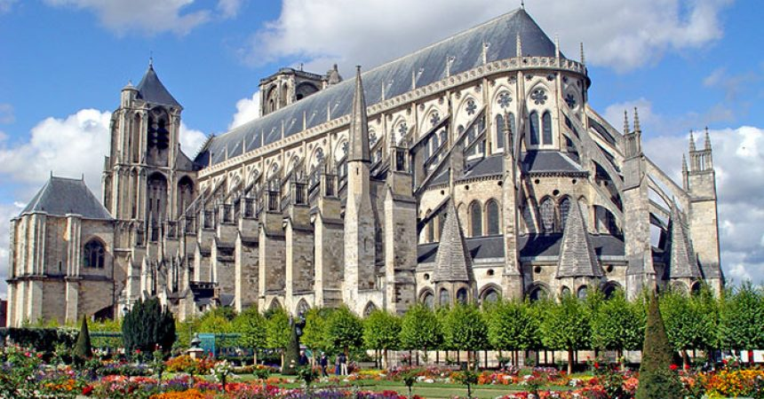

Il Gotico è una fase della storia dell’arte che succede cronologicamente il Romanico. Esso porta diversi miglioramenti su varie tecnologie sviluppate nel periodo antecedente ad esso, tuttavia non è da considerarsi come naturale conseguenza del Romanico: il Gotico potrebbe essere considerato quasi l’opposto! Esso infatti presenta principalmente un notevole slancio verso l’alto delle strutture, insieme all’assottigliamento delle pareti di queste ultime. Inoltre, proprio le pareti lasciano spazio ad ampie vetrate. Inoltre, un’ulteriore differenza tra le due fasi della storia dell’arte è proprio la diffusione di queste ultime: mentre il Romanico si diffonde in modo uniforme e variante in base alla collocazione, il Gotico prende realmente forma nell’apice del suo splendore nelle cattedrali d’Oltralpe. Al di fuori della Francia, il Gotico si espande grazie al “piano bernardino”, dunque seguendo schemi precisi nella realizzazione di chiese ed ottenendo come risultato chiese molto simili a distanza di molte centinaia di chilometri.
Parlando di scultura, in questa fase storico-artistica essa si manifesta molto connessa all’architettura: basti solo osservare le opere di Benedetto Antelami, tra l’XI e il XII secolo, oppure i Pulpiti realizzati da Nicola Pisano ed il figlio Giovanni. Differenziandosi totalmente dalla scultura del periodo romanico, la scultura gotica ha una fondazione principalmente classica (essa nasce sotto l’impero di Federico II di Svevia) e si evolve seguendo uno stile di naturalezza ed espressione.